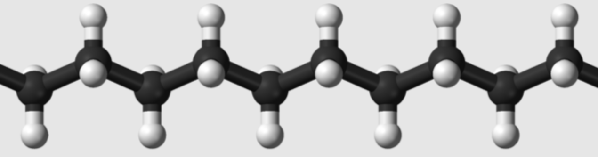
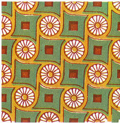
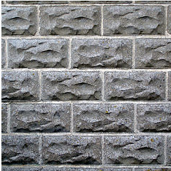
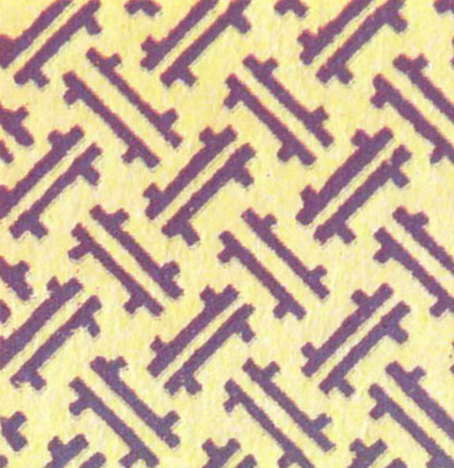

Advanced Algebra 1, 2022 Semester 1
Course contacts
- Lecturer
- Anand Deopurkar <anand.deopurkar@anu.edu.au>
- Demonstrators
- Alexander Lai De Oliveira <Alexander.LaiDeOliveira@anu.edu.au>
- Wenqi Zhang <u5829167@anu.edu.au>
- ASE Lecturer
- Angus McAndrew <Angus.Mcandrew@anu.edu.au>
Course information
This course is an introduction to the world of abstract algebraic structures such as groups, rings, and fields. In addition to learning the mathematical content, we will also hone our skills in writing clear and concise proofs. The assessment will reflect the demonstrated mastery of the content and the skills.
Textbook
- Algebra, by M. Artin (required)
- Abstract Algebra, by I. Herstein
- Advanced modern algebrae, by J. Rotman
Lectures and workshops
- Lecture 1
- Mon 3pm-4pm
- Lecture 2
- Wed 10am-11am
- Lecture 3
- Thu 10am-11am
- ASE Lecture
- Wed 3pm-4pm
In addition, there will be one hour of workshop, starting in week 2. The lectures will be recorded and available on ECHO360.
Assessment
- Weekly problem sets: 30%
- Mid-semester exam: 30%
- Final exam: 40%
Hurdles
The mid-semester and the final exam are hurdles. A student who fails any of these will receive an NCN.
ASE assessment
If you are taking the ASE, it will count towards 25% of the marks. If you are registered under the code MATH6118, the ASE is mandatory.
Collaboration policy
You are encouraged to discuss the course material and the homework with others, but you must write-up your homework on your own. If you work with other students, or get any external help, you must acknowledge it in your homework by writing, for example, “I collaborated with -— and -— on this problem set” or “I benefited from -— page from MathOverFlow for problem 3.”
Course plan
The following is a tentative plan for the course.
| Week | Topic | Reference (Artin 2E) |
|---|---|---|
| 1 | Groups, subgroups, cyclic groups | 2.1–2.4 |
| 2 | Cosets, Lagrange’s theorem, homomorphisms, normal subgroups | 2.5–2.8 |
| 3 | Product groups, quotient groups, isomorphism/correspondence theorems | 2.11–2.12 |
| 4 | Isometries, the orthogonal group, dihedral groups, crystallographic groups | 6.1–6.6 |
| 5 | Group actions and consequences | 6.7–6.11 |
| 6 | Class equation, Sylow theorems, generators and relations | 7 |
| 7 | Generators and relations, introduction to rings | 11.1, 11.2 |
| 8 | Homomorphisms, ideals, quotient rings | 11.3–11.5 |
| 9 | Fractions, prime and maximal ideals, correspondence theorems | 11.7, 11.8 |
| 10 | Modules, linear algebra over a ring | 14.1, 14.2 |
| 11 | Linear algebra over Z, applications to abelian groups | 14.4–14.7 |
| 12 | TBD |
Midterm Exam Information
The midterm exam will be on Thursday, 1 September 2022 6:30pm, location TBD. You will have 15 minutes of reading time, followed by 2 hours of writing time. It is a closed book exam, with no materials permitted.
If you are unable to be on campus for a documented covid related reason, please email me by Thursday, 25 August 2022.
The exam will cover the material up to week 5, which corresponds to chapter 2 and 6 of Artin.
For practice, make sure you can do all previous homework and workshop problems. In addition, here are two past midterm exams (caution: their format and content may be slightly different).
If you want to check your answers, you can consult your friends, ask me, ask any of the demonstrators, or post on the Wattle forum.
Here is the midterm exam paper.
Final Exam Information
The final exam will be on Monday, 14 November 2022 2:50pm, at Barry Drive 7-11 Level 1. You will have 15 minutes of reading time, followed by 2 hours of writing time. It is a closed book exam, with no materials permitted.
If you are unable to be on campus for a documented covid related reason, please email me by Wednesday, 9 November 2022.
The exam will cover everything we have covered, but will be focused more on the later half of the course.
For practice, make sure you can do all previous homework and workshop problems. In addition, here is the exam from 2020 and some practice problems from 2020 (caution: their format and content may be slightly different).
- Final Exam 2020
- Practice Problems 2022
If you want to check your answers, you can consult your friends, ask me, ask any of the demonstrators, or post on the Wattle forum. I will have zoom office hours every day of next week from 3pm to 4pm at https://anu.zoom.us/my/anandrd (password:cremona).
Here is the final exam paper.
Workshops
Worksheet 1
- Prove that \(a\) and \(bab^{-1}\) have the same order.
- Find all elements of finite order in \(\operatorname{GL}_2(\mathbf{C})\).
Hint: Think about eigenvalues! - If \(a\) has order \(m\) and \(b\) has order \(n\) (both finite), what can you say about the order of \(ab\)?
First, do it in an abelian group.
Second, find an example where the order of \(ab\) is not even finite.
Hint: One example is by taking \(a\) and \(b\) to be suitable reflections in \(\mathbf{R}^{2}\).
Worksheet 2
In this worksheet, we will explore signs of permutations.
- Let \(p\) consist of a 2-cycle and no other non-trivial cycles. (This kind of permutation is called a transposition). Show that \(\operatorname{sgn}(p) = -1\).
- Let \(p\) consist of an \(n\)-cycle and no other non-trivial cycles. Express \(p\) as a product of transpositions, and hence find \(\operatorname{sgn}(p)\).
- Prove that every permutation can be expressed as a product of transpositions. Convince yourself that this expression is not unique, even the number of factors can change. But something about it is unique; what is it?
- The alternating group \(A_n \subset S_n\) is the subgroup consisting of permutations of sign \(1\). What is the order of \(A_n\)? Write down the elements of \(A_{3}\) and \(A_4\).
Worksheet 3
A polyethylene molecule is a long chain of carbon and hydrogen atoms that looks like this:

The central spine of carbon atoms (black) forms a zigzag, which we take to extend infinitely in both directions. Let us say that the carbon atoms lie in the \(x,y\)-plane; their \(x\)-coordinates are integers; and their \(y\)-coordinates are \(\pm 1\).
Let \(G\) be the group of symmetries (isometries) of the planar carbon spine (ignoring the hydrogens). Then \(G\) contains the following kinds of elements, for every \(n \in \mathbf{Z}\):
- Reflections \(f_{n}\)
- in the vertical line \(x = n\),
- 180 rotations \(r_{n}\)
- centered at the point \((n + 1/2, 0)\),
- Glides \(g_{n}\)
- reflection in the \(y\)-axis followed by an \(x\)-translation by \(2n+1\),
- Translations \(t_{n}\)
- traslations in the \(x\)-axis by \(2n\).
- Write each transformation in the form
\[ X \mapsto AX + B\]
where \(A\) is a \(2 \times 2\) matrix.
Hint: There are only 4 possible \(A\)’s: \[ \begin{pmatrix} \pm 1 & \\ & \pm 1 \end{pmatrix}. \] Using your description (or by pure imagination!), complete the following multiplication table. By convention, the entry in row \(r\) and column \(c\) is the transformation \(r \circ c\).
fn rn gn tn fm rm gm tm - Let \(N \subset G\) be the subgroup consisting of the translations. Show that it is a normal subgroup. Can you identify \(G/N\)? Its multiplication table is hidden in the table above!
Worksheet 4
Let \(G\) be a subgroup of the group of symmetries of the plane. For a point \(p\) in the plane, the stabiliser of \(p\) is the subset \(G_p \subset G\) defined by \[ G_p = \{g \in G \mid g(p) = p\}.\] The orbit of \(p\) is the subset \(O_p\) of the plane defined by \[ O_p = \{g(p) \mid g \in G\}.\]
Problem 1
Verify that \(G_p \subset G\) is a subgroup.
Problem 2
Let \(G = D_n\), the group of symmetries of a regular \(n\)-gon. Find the orbits and stabilisers of various points. How many different kinds of stabilisers do you see?
Problem 3
Let \(G\) be the group of isometries of one of the wallpaper patterns on the next page. Find the orbits and stabilisers of various points \(p\) in the plane. How many different kinds of stabilisers do you see?
Problem 4
Let \(G\) be as before and let \(H\) be the associated point group. Prove that the map \(\phi \colon G_p \to H\) is injective. Can you always find a point \(p\) for which the map is also surjective?
\newpage
Patterns
\hfill
\bigskip
 \hfill 
Worksheet 5
Problem 1
Find the conjugacy classes and hence the class equation for \(D_{5}\) and \(D_{6}\). Generalise your results to \(D_{n}\).
Problem 2
There are 3 ways to partition \(\{1,2,3,4\}\) into 2 subsets of size 2. Use this to construct a non-trivial homomorphism \(\phi \colon S_4 \to S_3\). What is the kernel of \(\phi\)?
Problem 3
Fix positive integers \(n\) and \(k\) with \(k \leq n\) (for example, \(n = 4\) and \(k = 2\)). Let \(\operatorname{Gr}(k,n)\) be the set of \(k\)-dimensional sub-spaces of \(\mathbf{R}^n\). The natural action of \(\operatorname{GL}_n(\mathbf{R})\) on \(\mathbf{R}^{n}\) induces an action on \(\operatorname{Gr}(k,n)\).
- Let \(V\) be the subspace of vectors where the last \(n-k\) co-ordinates are 0. Find the stabiliser of \(V\).
- Show that the action is transitive.
- Let \(S\) be the set of all two element subsets of \(\operatorname{Gr}(k,n)\). Is the action of \(\operatorname{GL}_n(\mathbf{R})\) on \(S\) transitive? What are the orbits of the action?
Worksheet 6
The goal of this workshop is to play with generators and relations.
- Construct an isomorphism \(\langle a \rangle \to \mathbf{Z}\).
- Prove that the free group \(\langle a, b \rangle\) is not abelian. (The same holds for free groups on more than 2 generators.)
- Let \(N \subset \langle a, b \rangle\) be the smallest normal subgroup that contains \(a^3, b^2, ab\). Prove that \(N\) is the entire free group, and so \(G/N\) is trivial. That is, we have \[ \langle a, b \mid a^3, b^2, ab \rangle = \{1\}.\]
- Let \(N \subset \langle a, b \rangle\) be the smallest normal subgroup that contains \(a^3, b^2\).
Prove that there exists a homomorphism
\[ G/N \to \operatorname{PSL}_2(\mathbf{Z})\]
that sends \(\overline a\) to \(\begin{pmatrix}0 & -1 \\ 1 & 0 \end{pmatrix}\) and \(\overline b\) to \(\begin{pmatrix}1 & -1 \\ 1 & 0 \end{pmatrix}\).
- From this, conclude that \(G/N\) is not trivial.
- Also conclude that \(\overline{ab} \in G/N\) has infinite order.
- In (3), change the relations to \(a^3, b^3, ab\). Is the resulting group \(G/N\) trivial?
Worksheet 7
The goal of this workshop is to get comfortable with rings.
- Let \(R\) be the ring of continuous real valued functions on the interval \([0,1]\).
- Remember the definition of an integral domain. Is \(R\) an integral domain?
- Remember the definition of a unit. What are the units in \(R\)?
- Remember the definition of a ring homomorphism. Show that the map \[ R \to \mathbf{R}\] defined by \(f \mapsto f(0.1)\) is a ring homomorphism.
- Let \(R = \mathbf{Z}[x]/(x^2 + 1)\).
- Find all ring homomorphisms \(R \to \mathbf{C}\).
- Find all ring homomorphisms \(R \to \mathbf{Z}/ 5 \mathbf{Z}\).
- Prove that there are no ring homomorphisms \(R \to \mathbf{Z} / 3 \mathbf{Z}\).
- Explore: for which numbers \(p\) are there ring homomorphisms \(R \to \mathbf{Z}/ p \mathbf{Z}\)?
Worksheet 8
The goal of this workshop is to get comfortable with quotient rings.
- Let \(R = \mathbf{Q}[x]/(x^2-2)\).
- Construct a ring homomorphism \(R \to \mathbf{R}\).
- Prove that the ring homomorphism you constructed is injective.
- It turns out that \(R\) is a field. Find out the multiplicative inverse of: \(x\), \(1+x\), and if you have time/energy, \(a+bx\).
- Let \(R = \mathbf{Z}[x]/(x^2-2, 3x-1)\).
- Are there any homomorphisms \(R \to \mathbf{Q}\)?
- Is there a prime \(p\) such that there is a homomorphism \(R \to \mathbf{Z}/p \mathbf{Z}\)?
- The ideal \((x^2-2, 3x-1) \mathbf{Z}[x]\) of \(\mathbf{Z}[x]\) contains non-zero integers. Which ones?
Worksheet 9
We continue thinking about quotient rings.
Let \(F\) be a field. Recall that all ideals of \(F[x]\) are principal, namely, of the form \(p(x)F[x]\) for some \(p(x) \in F\). (The ideal \((f_1,\dots, f_n)R\) is often denoted by \(\langle f_1,\dots,f_n \rangle\), when the ambient ring \(R\) is clear from the context.) Also recall that an ideal \(I\) is called maximal if \(I\) is not the unit ideal, and the only ideals containing \(I\) are \(I\) and the unit ideal.
- Why are all ideals of \(F[x]\) principal? Given an ideal \(I \subset F[x]\), how will you find a generator \(p(x)\)?
- When is \(I = \langle p(x) \rangle\) a maximal ideal?
- What are the maximal ideals of \(\mathbf{C}[x]\)? Of \(\mathbf{R}[x]\)?
Determine if the following ring is a field or not a field. If it is not a field, find a non-zero element that does not have a multiplicative inverse. It may be useful to simplify the given description by taking quotients in stages.
- \(\mathbf{F}_5[x]/(x^2+1)/\)
- \(\mathbf{Z}[x]/(3x-1, x^2+x+1)\)
- \(\mathbf{R}[x,y]/(x^2+y^2-1, x-y)\)
- \(\mathbf{Q}[x,y]/(x^2+y^2-1, x-y)\)
Worksheet 10
The goal of this workshop is to explore \(F[t]\)-modules.
Let \(F\) be a field. For concreteness, you can take \(F = \mathbf{Q}\) or \(\mathbf{R}\) or your favourite field.
- Give an example of a non-zero \(F[t]\)-module.
- Convince your friends that an \(F[t]\)-module is automatically an \(F\)-vector space.
- Give an example of an \(F[t]\)-module that is 2-dimensional as an \(F\)-vector space. Is your module a free \(F[t]\)-module?
- Let \(V\) be an \(F[t]\)-module. Consider the map \(A \colon V \to V\) defined by \(Av = t v\). Prove that \(A\) is an \(F\)-linear map of vector spaces.
- Express the map \(A\) in your example as a \(2 \times 2\) matrix.
Conversely, let \(V\) be an \(F\)-vector space and \(A \colon V \to V\) an \(F\)-linear map. Show that there is a unique \(F[t]\)-module structure on \(V\) such that for all \(v \in V\), we have \(A v = t v\).
Slogan: An \(F[t]\)-module is “the same as” an \(F\)-vector space and an endomorphism.
- What should be the slogan for an \(F[s,t]\)-module? (Caution: It is trickier than you might think.)
Worksheet 11
The goal of this workshop is to explore generators and relations for modules.
Module \(M\) over \(\mathbf{Z}\)
- Let \(M = \mathbf{Z}/2 \mathbf{Z} \oplus \mathbf{Z}/4 \mathbf{Z}\) considered as a \(\mathbf{Z}\)-module. Let \(g_1 = (1,1), g_2 = (1,2), g_3=(0,1)\). Do \(g_{1}, g_2, g_3\) generate \(M\)?
- Consider the map \(\mathbf{Z^3} \to M\). Find a set of generators for its kernel.
Module \(N\) over \(\mathbf{Z}\)
- Let \(N\) be the module generatored by \(x, y\) modulo the relations \[ x + 2y = 0, \quad y + 2x = 0.\] Express \(N\) as the cokernel of a matrix.
- Does \(z = x+y\) generate \(N\)?
- What is the kernel of the map \(\mathbf{Z} \to N\) that sends \(1 \to z\)?
- Describe \(N\) up to isomorphism in as simple terms as possible.
Module \(P\) over \(\mathbf{C}[x,y]\).
- Let \(P = \mathbf{C}\) considered as a \(R = \mathbf{C}[x,y]\)-module where \(x\) and \(y\) act by \(0\). Find a set of generators for \(P\).
- Let \(R^n \to P\) be the surjection given by your generators. Find the kernel \(P'\), and a set of generators for \(P'\).
- Repeat, until you reach the 0 module.
The process of repeatedly finding generators and relations is called finding a resolution. For some rings, all finitely generated modules have finite resolutions, but not for all.
Homework
The assignments are due on Gradescope by Friday 11:59pm. No late homework accepted, except if you have permission from me, which you may get if you ask me by email at least 24 hours before the deadline. I will drop the lowest homework score from the final mark.
Assignment 1
This assignment is due on Gradescope by Friday, 5 August, 11:59pm. Be clear, precise, and concise. All work you submit must be your own. Please acknowledge any help you receive, including names of collaborators.
Reading
- For review: Artin, Chapter 1, Sections 1.4, 1.5
- Artin, Chapter 2, Sections 2.1, 2.2, 2.3, 2.4
Problems for submission
- Problem 1
Which of the following are associative laws of composition? Which ones define a group? No justification is necessary.
- \(\mathbf{Z} \times \mathbf{Z} \to \mathbf{Z}\) given by \((a, b) \mapsto a-b\).
- \(M_{n\times n} (\mathbf{R}) \times M_{n \times n}(\mathbf{R}) \to M_{n \times n}(\mathbf{R})\) given by \((A,B) \mapsto AB\).
- \(\mathbf{R} \times \mathbf{R} \to \mathbf{R}\) given by \((a,b) \mapsto \exp(a+b)\).
- Let \(A\) be a set and let \(F(A)\) be the set of functions \(f \colon A \to A\). The law \(F(A) \times F(A) \to F(A)\) given by \((f,g) \mapsto f \circ g\).
- Problem 2
(Artin, 2.3) Let \(x,y,z,w\) be elements of a group \(G\).
- Solve for \(y\), given that \(xyz^{-1}w = 1\).
- Suppose that \(xyz = 1\). Does it follow that \(yzx = 1\)? Does it follow that \(yxz = 1\)? Justify your answer with a proof or a counter-example.
- Problem 3
(Artin, 4.1) Let \(a\) and \(b\) be elements of a group \(G\). Assume that \(a\) has order 7 and that \(a^{3}b = ba^3.\) Prove that \(ab = ba\).
- Problem 4
(Artin, 4.5) Prove that every subgroup of a cyclic group is cyclic. Do this by working with exponents, and use the description of the subgroups of \(\mathbf{Z}^{+}\).
Assignment 2
This assignment is due on Gradescope by Friday, 12 August, 11:59pm. Be clear, precise, and concise. All work you submit must be your own. Please acknowledge any help you receive, including names of collaborators.
Reading
- Artin, Chapter 2, Sections 2.5, 2.6, 2.7, 2.8
Problems for submission
- Problem 1
(Artin 2.8.11) Let \(G\) and \(H\) be the following subgroups of \(\operatorname{GL}_2(\mathbf{R})\): \[ G = \left\{ \begin{pmatrix} x & y \\ 0 & 1 \end{pmatrix}\right\}, \quad H = \left\{ \begin{pmatrix} x & 0 \\ 0 & 1 \end{pmatrix}\right\}, \] with \(x\) and \(y\) real and \(x > 0\). An element of \(G\) can be represented by a point in the right half plane using coordinates \((x,y)\). Make sketches showing the partitions of the half plane into left \(H\)-cosets and right \(H\)-cosets.
- Problem 2
(Artin 2.5.1) Let \(\phi \colon G \to H\) be a surjective homomorphism. Prove that if \(G\) is cyclic, then \(H\) is cyclic, and if \(G\) is abelian, then \(H\) is abelian.
- Problem 3
Let \(G\) be the group in Problem 1. Find a surjective homomorphism \(\phi \colon G \to \mathbf{R}_{> 0}^{\times}\) and an isomorphism \(\ker \phi \to \mathbf{R}^+\).
- Solution sketch Solution
Define \(\phi \colon G \to \mathbf{R}_{> 0}^{\times}\) by \[ \phi \begin{pmatrix} x & y \\ & 1 \end{pmatrix} \mapsto x.\] The kernel consists of matrices with \(x = 1\). Define \(\psi \colon \ker \phi \to \mathbf{R}^+\) by \[ \psi \begin{pmatrix} 1 & y \\ & 1 \end{pmatrix} \mapsto y.\]
Caution: the map \(\psi\) defined by the \(y\)-entry is not a homomorphism on \(G\). It is only a homomorphism on the subgroup \(\ker \phi \subset G\)!
- Solution sketch Solution
- Problem 4
(Artin 2.8.8) Let \(G\) be a group of order 25. Prove that \(G\) has at least one subgroup of order \(5\), and that if \(G\) contains only one subgroup of order 5, then \(G\) is a cyclic group.
Assignment 3
This assignment is due on Gradescope by Friday, 19 August, 11:59pm. Be clear, precise, and concise. All work you submit must be your own. Please acknowledge any help you receive, including names of collaborators.
Problem 1
(Artin 11.4, modified) Given subgroups \(H, K \subset G\), we have a map \( \phi \colon H \times K \to G\) given by \(\phi(h,k) = hk\). Read Proposition 2.11.4 (Artin) for the basic properties of this map. In each of the following cases, determine whether or not \(\phi \colon H \times K \to G\) is an isomorphism
- \(G = \mathbf{R}^{\times}\), \(H = \{\pm 1\}\), \(K = \mathbf{R}_{>0}^{\times}\).
- \(G = \{\text{invertible upper triangular $2 \times 2$ matrices}\}\), \(H = \{\text{invertible diagonal matrices}\}\),\newline \(K = \{\text{upper triangular matrices with diagonal entries 1}\}\).
Problem 2
(Artin 12.4, modified) Let \(G = \mathbf{C}^{\times}\) and let \(H \subset G\) be the subgroup consisting of the \(n\)-th roots of unity: \[ H = \{\zeta \in G \mid \zeta^{n} = 1\}.\] For \(n = 4\), describe the cosets of \(H\) in \(G\) explicitly. For any \(n\), construct an isomorphism \(G/H \to G\).
Problem 3
Use the correspondance theorem for subgroups to describe all subgroups of \(\mathbf{Z}/d \mathbf{Z}\). Using your description, show that for every positive integer \(e\) dividing \(d\), there is a unique subgroup of \(\mathbf{Z}/d \mathbf{Z}\) of order \(e\).
Problem 4
Let \(N \subset G\) be a normal subgroup. Give an example where \(G\) is isomorphic to \(N \times G/N\) and an example where \(G\) is not isomorphic to \(N \times G/N\). Justify your examples.
Assignment 4
This assignment is due on Gradescope by Friday, 26 August, 11:59pm. Be clear, precise, and concise. All work you submit must be your own. Please acknowledge any help you receive, including names of collaborators.
Problem 1
(Artin, Chapter 6, 4.2a, modified). Find all subgroups of the dihedral group \(D_4\) and determine which ones are normal. For the normal ones, identify the quotient group up to isomorphism.
Hint: You may use that any subgroup of index 2 is normal; see (Chapter 2, Problem 8.10).
Problem 2
(Artin, Chapter 2, M.7, modified). Let \(G\) be a subgroup of \(\operatorname{GL}_n(\mathbf{R})\). On \(G\), define a relation \(x \sim y\) if there exists a continuous map \(\phi \colon [0,1] \to G\) with \(\phi(0) = x\) and \(\phi(1) = y\). Convince yourself (but do not write/submit) that \(\sim\) is an equivalence relation.
Let \(G_0 \subset G\) be the set of elements equivalent to the identity. Prove that \(G_0\) is a normal subgroup of \(G\). (It is called the connected component of the identity.)
Problem 3
Let \(G = O_2\). Find \(G_0\) with proof.
Problem 4
Find, with justification, the point group of the following pattern (assumed to extend infinitely). For each element of the point group, identify an isometry that maps to it.

Assignment 5
Problem 1
(Artin, Chapter 7, Problem 2.1) Determine the centralizer and the order of the conjugacy class of
- the matrix \(\begin{pmatrix}1 & 1 \\ & 1 \end{pmatrix}\) in \(\operatorname{GL}_2(\mathbf{F}_3),\)
- the matrix \(\begin{pmatrix}1 & \\ & 2 \end{pmatrix}\) in \(\operatorname{GL}_2(\mathbf{F}_5).\)
Problem 2
Let \(G\) be a group of order \(2022\). Prove that \(G\) cannot be simple; that is, it must have a normal subgroup other than the trivial subgroup and the entire group.
Problem 3
(Artin, Chapter 7, Problem 7.8, modified) Let \(G = \operatorname{GL}_2(\mathbf{F}_p)\). Find the order of \(G\). Find a Sylow \(p\)-subgroup of \(G\) and determine the number of Sylow \(p\)-subgroups.
Problem 4
(Artin, Chapter 7, Problem M.1)
Classify groups that are generated by two elements \(x\) and \(y\) of order 2.
Hint: It will be convenient to make use of the element \(z = xy\).
“Classify” means “find all up to isomorphism”.
Assignment 6
This assignment is due on Gradescope on Friday, September 30.
Problem 1
(Artin, Chapter 11, Problem 1.6, modified) Decide (with justification) whether or not \(S\) is a subring of \(R\) where
- \(R = \mathbf{Q}\) and \(S \subset R\) is the set of rational numbers \(a/b\) where \(b\) is not divisible by 3.
- \(R = \text{the set of real valued functions on $\mathbf{R}$}\), and \(S \subset R\) is the set of bounded functions.
Problem 2
Construct a ring homomorphism or argue that no such homomorphism exists:
- \(\mathbf{Z}/5 \mathbf{Z} \to \mathbf{Q}\)
- \(\mathbf{Q} \to \mathbf{Z}/ 5 \mathbf{Z}\)
- \(\mathbf{Z}[x,y]/(x^2+y^2-1) \to \mathbf{Q}\)
- \(\mathbf{Z}[x,y]/(x^2+y^2-3) \to \mathbf{Z}\)
Problem 3
(Artin, Chapter 11, Problem 1.8, modified) Determine (with proof) the units in \(\mathbf{Z} / n \mathbf{Z}\).
Problem 4
Let \(R\) be a ring. An \(n \times n\) matrix \(A\) with entries in \(R\) is invertible over \(R\) if there is an \(n \times n\) matrix \(B\) with entries in \(R\) such that \(AB = BA = \operatorname{id}\). Prove for yourself (but do not turn in) the following theorem:
Theorem: A matrix \(A\) is invertible over \(R\) if and only if \(\det A\) is a unit in \(R\).
- Prove that a ring homomorphism \(\phi \colon R \to S\) induces a group homomorphism \[ \operatorname{GL}_n(R) \to \operatorname{GL}_n(S),\] obtained by applying \(\phi\) to each entry of the matrix.
- Let \(p\) be a prime and let \(\phi \colon \mathbf{Z}/ p^2 \mathbf{Z} \to \mathbf{Z} / p \mathbf{Z}\) be the unique ring homomorphism. Prove that the induced homomorphism \[ \operatorname{GL}_n(\mathbf{Z}/p^2 \mathbf{Z}) \to \operatorname{GL}_n(\mathbf{Z} / p \mathbf{Z})\] is surjective and its kernel is isomorphic to the additive group \((\mathbf{Z} / p \mathbf{Z})^{n^2}\).
- (Not to be turned in) Generalise the statement above to \(\operatorname{GL}_n(\mathbf{Z}/p^m \mathbf{Z})\).
Assignment 7
This assignment is due on Gradescope on Friday, October 7.
Problem 1
A principal ideal domain is an integral domain \(R\) in which every ideal is of the form \(fR\) for some \(f \in R\). For example, \(\mathbf{Z}\) is a principal ideal domain. Prove that \(\mathbf{Z}[x]\) is not a principal ideal domain.
Remark: In a principal ideal domain \(R\), we have a reasonable definition of gcd. Given \(f, g \in R\), we consider the ideal \((f,g)R\), which must be of the form \(hR\) for some \(h \in R\). This \(h\) is not necessarily unique, but it is unique up to multiplying by a unit, and we call it the gcd of \(f\) and \(g\). But if \(R\) is not a principal ideal domain, then there may not be any such \(h\).
Problem 2
(Artin, Chapter 11, 3.8) Let \(p\) be a prime number and let \(R\) be a ring in which \(p = 0\). Prove that the map \(R \to R\) that sends \(x\) to \(x^p\) is a ring homomorphism.
Remark: This homomorphism is called the Frobenius homomorphism. The Frobenius is the identity map for \(R = \mathbf{Z}/p \mathbf{Z}\), but in general, it is different from the identity. In fact, it may not even be an isomorphism (example: \(R = \mathbf{F}_p[x]\)).
Problem 3
(Artin, Chapter 11, 4.4, modified) Are the rings \(\mathbf{Z}[x]/(x^2+7)\) and \(\mathbf{Z}[x]/(2x^2+7)\) isomorphic? Does your answer change if you change \(\mathbf{Z}\) to \(\mathbf{C}\)?
Problem 4
Find generators for the kernel of the following maps:
- \(\mathbf{Z}[x] \to \mathbf{F}_7[t]/(t^2+1)\) that sends \(x \mapsto 2t\).
- \(\mathbf{C}[x,y] \to \mathbf{C}[t]\) which is the identity on \(\mathbf{C}\) and sends \(x \to t^2, y \mapsto t^3\).
Assignment 8
This assignment is due on Gradescope on Friday, October 14.
Problem 1
(Artin Chapter 11, 3.9(a), modified)
An element \(x\) of a ring \(R\) is called nilpotent if some power of \(x\) is zero. Prove that if \(x\) is nilpotent, then \(1-x\) is a unit.
Hint: Use the geometric series.
Problem 2
(An ideal that is not finitely generated)
Let \(A\) be the ring of continuous real-valued functions on \(\mathbf{R}\). Let \(I \subset A\) be the set \[I = \{f \in A \mid \text{there exists } \epsilon > 0 \text{ such that } f(x) = 0 \text{ for all } x \in [-\epsilon, \epsilon]\}.\]
- Prove that \(I \subset A\) is an ideal.
- Prove that \(I \neq (f_1,\dots, f_{n})A\) for any \(n\) and any \(f_1, \dots, f_n \in A\).
Remark: We say that a ring is Noetherian if all its ideals are finitely generated. For example, \(\mathbf{Z}\) and all fields are Noetherian. Any quotient of a Noetherian ring is Noetherian, and a polynomial ring (in finitely many variables) over a Noetherian ring is Noetherian. As a result, many of the rings we encounter in algebra are Noetherian. The name is after Emmy Noether, who was a pioneer in modern algebra. She was the first to develop the general theory of rings and ideals.
Problem 3
(A generalised Chinese remainder theorem)
Let \(f, g \in R\) be two elements such that \((f,g)R = R\). Construct a ring isomorphism \[ R/fg \to R/f \times R/g.\]
Hint: The hypotheses imply that there exist \(a,b \in R\) with \(af+bg = 1\).
Remark: There is an even more general statement with ideals; see Artin, Chapter 11, Exercise 6.8.
Problem 4
Find all maximal ideals of \(\mathbf{Z}[x]/x^{2022}\).
Hint: First show that every maximal ideal must contain \(x\), and then use the correspondence theorem.
Remark: It is a general fact that if \(x \in R\) is nilpotent, then every maximal ideal of \(R\) contains \(x\). Your argument for \(R = \mathbf{Z}[x]/x^{2022}\) probably also proves this general statement.
Assignment 9
This assignment is due on Gradescope on Friday, October 21.
Problem 1
Let \(F\) be a field. Read the definition of the ring \(F\llbracket t \rrbracket\) of formal power series in \(t\) with coefficients in \(F\) (Artin, Chapter 11, Exercise 2.2). Prove that \(p(t) = a_0 + a_1t + \cdots \) is a unit of \(F\llbracket t \rrbracket\) if and only if \(a_0 \neq 0\).
Problem 2
Find all ideals of \(F\llbracket t \rrbracket\). What are the maximal and prime ideals?
Remark: For \(F = \mathbf{R}\) or \(\mathbf{C}\), we can also consider the ring of convergent power series \(F\{ t \}\). This is a sub-ring of \(F \llbracket t \rrbracket\) consisting of power series with a positive radius of convergence. All the statements above that you proved for \(F \llbracket t \rrbracket\) remain true for \(F\{ t \}\), probably with the same proof.
Problem 3
Let \(F\) be a field and let \(S \subset F[t]\) be the set of polynomials \(p(t)\) such that \(p(0) \neq 0\). Prove that the homomorphism \(F[t] \to F\llbracket t \rrbracket\) extends to an injective homomorphism \[ S^{-1} F[t] \to F\llbracket t \rrbracket.\]
Remarks:
- All the statements in Problem 1 and Problem 2 that you proved for \(F \llbracket t \rrbracket\) remain true also for the sub-ring \(S^{-1}F[t]\).
- The map \(S^{-1} F[t] \to F \llbracket t \rrbracket\) is far from surjective. Can you write down an element that is not in the image? (Do not turn in).
- The ring \(\mathbf{R}[t]\) is the ring of polynomial functions on the line. The rings \(S^{-1} \mathbf{R}[t] \subset \mathbf{R}\{t\} \subset \mathbf{R}\llbracket t \rrbracket\) encode increasingly permissive notions of ’functions defined around 0’.
Problem 4
Let \(M \subset \mathbf{R}^{n}\) be the set of vectors \(v\) such that \[ 2v \in \mathbf{Z}^n \text{ and } \sum_{i = 1}^n v_i \in \mathbf{Z}.\] Find an isomorphism of \(\mathbf{Z}\)-modules \(\mathbf{Z}^n \to M\).
Assignment 10
This assignment is due on Gradescope on Friday, October 28.
Problem 1
An \(R\)-module is cyclic if it can be generated by one element. Prove that every cyclic module is isomorphic to the \(R\)-module \(R/I\) for some ideal \(I \subset R\).
Problem 2
(Artin, Chapter 14, Exercise 1.4)
A module is simple if it is not zero and it has no proper submodules. Prove that every simple \(R\)-module is isomorphic to an \(R\)-module of the form \(R/m\), where \(m \subset R\) is a maximal ideal.
Problem 3
Let \(M = \mathbf{Z}[i] = \{a + b i \mid a, b \in \mathbf{Z}\}\). Let \(N = (1+2i) M = \{(1+2i)z \mid z \in M\}\). Then \(M\) is a \(\mathbf{Z}\)-module and \(N \subset M\) is a sub-module. Identify the quotient \(M/N\), up to isomorphism, as a direct sum of cyclic \(\mathbf{Z}\)-modules.
Problem 4
(Artin, Chapter 14, Exercise 7.5)
Determine the number of isomorphism classes of abelian groups of order 400.